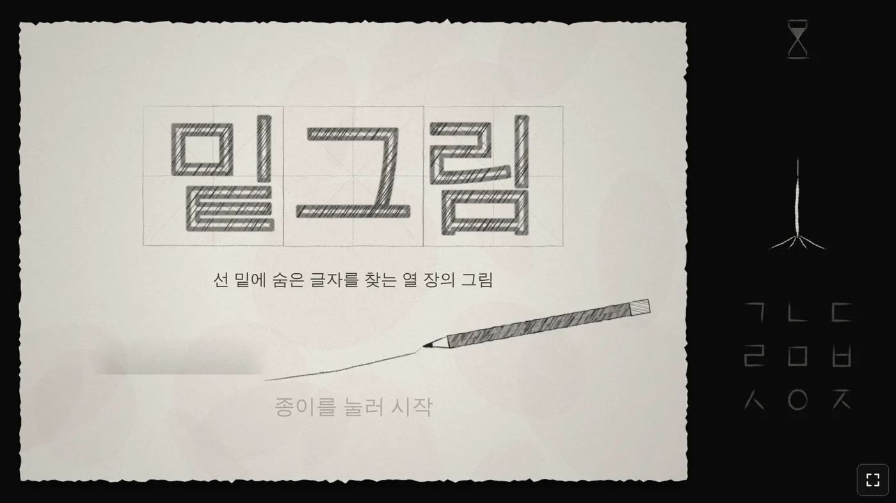
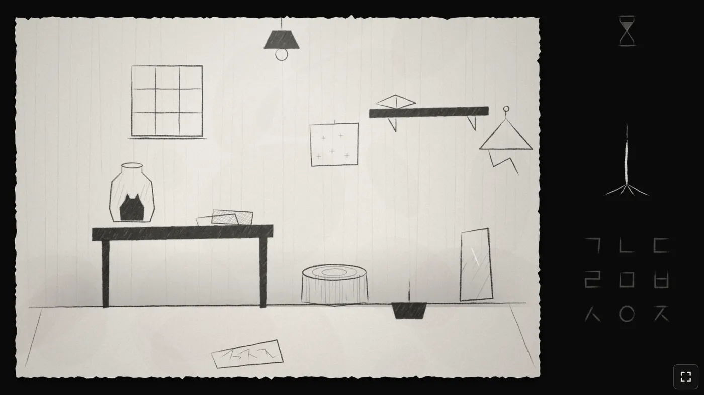

🧩 퍼즐 게임 · 무료 · 설치 없음
밑그림
“선 밑에 숨은 글자를 찾는 열 장의 그림”
- 전체 30~60분
- 그림 퍼즐 10장
- 가로 화면
- 자동 저장
회원가입 없이 누르면 바로 시작돼요
어떤 게임인가요?
어두운 방, 회백색 종이 위에 연필로 그린 방 하나가 있어요. 전등, 창문, 선반, 병 속 고양이, 나무 그루터기…
사물을 하나 누르면 그 안의 퍼즐로 들어가요. 끌고, 뒤집고, 접고, 지우개로 문지르고, 별과 별을 이으면 선 밑에 숨어 있던 한글 자음이 모습을 드러내요.
글자를 찾을 때마다 오른쪽의 나무가 조금씩 자라요. 아홉 장을 모두 풀면 마지막 한 장이 열려요.
이렇게 해요
- STEP 1
사물을 눌러요
방 안의 물건을 누르면 그 물건의 퍼즐로 들어가요.
- STEP 2
움직이고 겹쳐요
끌고, 두드리고, 접고, 지우개로 문지르며 숨은 글자를 찾아요.
- STEP 3
글자를 적어요
오른쪽 자음판에서 찾은 글자를 눌러요. 맞히면 빨간 도장이 찍히고 나무에 잎이 돋아요.

🌿 알아 두면 좋아요
- 틀리면 잎이 하나 떨어져요. 세 번 틀리면 종이가 번져서 잠시 기다려야 해요.
- 오른쪽 위 모래시계는 퍼즐 안에서만 흘러요. 모래가 다 내려오면 힌트가 하나씩 열려요. 한 퍼즐에 힌트는 세 개예요.
- 보이는 글자가 곧 답은 아닐 수도 있어요. 천천히 의심해 보세요.
이런 분께 추천해요
- 쉬운 퍼즐로는 성에 안 차는 분
- 방탈출·숨은그림찾기를 좋아하는 분
- 연필 그림처럼 조용하고 차분한 분위기를 좋아하는 분
제목 화면의 종이를 누르면 시작해요. 설명이 거의 없는 게임이라 막히는 게 당연해요. 모래시계 힌트를 기다려 보세요.
📱 어떤 기기에서 하면 좋을까요?
- 가장 좋아요컴퓨터·노트북 크롬·엣지·웨일
마우스로 사물을 섬세하게 움직일 수 있어요. 오른쪽 아래 전체 화면 버튼을 누르면 꽉 차요.
- 좋아요태블릿 아이패드·갤럭시탭
손가락으로 끌고 문지르는 재미가 있어요. 가로로 눕혀 주세요.
- 괜찮아요휴대폰 가로로 돌려서
가로 화면에서만 그려져요. 작은 선을 찾아야 해서 화면이 작으면 조금 힘들 수 있어요.
오른쪽 위 메뉴(⋮ 또는 ···)에서 「다른 브라우저로 열기」를 눌러 크롬이나 사파리로 열어 주세요. 앱 안에서는 전체 화면이 안 되고 저장이 풀릴 수 있어요.
🍎 아이폰·아이패드에서는
- ① 사파리로 열고 가로로 돌리기
세로로 들면 「기기를 옆으로 돌려 주세요」 안내가 떠요. 화면이 안 돌아가면 제어 센터에서 화면 회전 잠금을 꺼 주세요.
- ② 홈 화면에 추가하기
아이폰은 전체 화면 버튼이 동작하지 않아요. 공유 버튼(□↑) → 「홈 화면에 추가」로 열면 주소창 없이 꽉 찬 화면이 돼요.
- ③ 소리
연필 긁는 소리, 종이 넘기는 소리가 분위기를 살려 줘요. 무음 스위치가 켜져 있으면 들리지 않아요. 소리가 없어도 풀 수는 있어요.
- ④ 이어서 하려면
진행은 그 기기에 자동으로 저장돼요. 아이폰 사파리는 오래 들어가지 않은 사이트의 기록을 지우기도 하니, 너무 오래 쉬지 말고 이어서 풀어 주세요.
🤖 갤럭시 등 안드로이드에서는
크롬이나 삼성 인터넷으로 열면 첫 터치 때 전체 화면과 가로 고정이 자동으로 켜져요. 안 되면 오른쪽 아래 전체 화면 버튼을 눌러 주세요.
▶ 바로 해 보기
설치도, 회원가입도 필요 없어요.
밑그림 시작하기game.edoori.co.kr/mitgeurim/